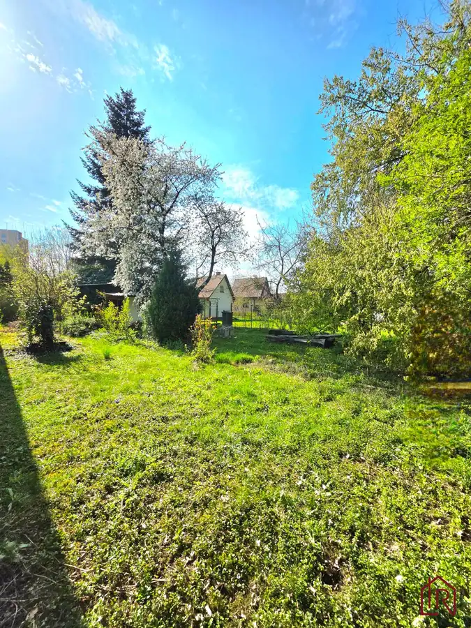
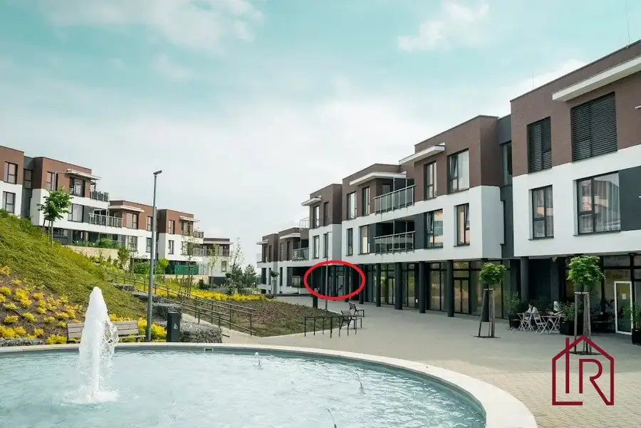
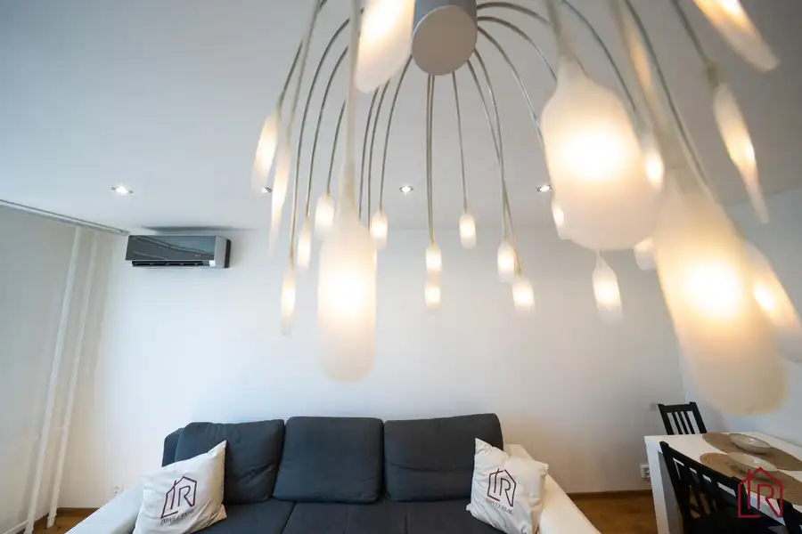

3-izbový byt, Košice - Západ, komplet rekonštrukcia, 66m2
mestská časť Západ, Košice
- Dispozícia3-izbový
- Plocha64 m²
- Poschodie7. z 7
- Stavúplne prerobený
- Vlastníctvoosobné
O nehnuteľnosti
IMPULZ REAL a Lucia Talianová ponúkajú na predaj kompletne zrekonštruovaný 3-izbový byt na Muškátovej ulici v Košiciach. Byt o výmere 66 m2 disponuje 2 samostatnými nepriechodnými spálňami a výťahom stojacim priamo na poschodí. Je to ideálne bývanie pre rodinu či pár hľadajúcich moderný domov v tichom prostredí s bezproblémovým spojením do centra.
Interaktívny pôdorys nájdete na tejto stránke:
https://floorplanner.com/projects//spaceplanner
TECHNICKÉ PARAMETRE A INFORMÁCIE:
DISPOZÍCIA: 3-izbový byt
CELKOVÁ PLOCHA: 66 m2
POSCHODIE: 7. p. / 7. p.
VÝŤAH: Áno (osobný, ide až do suterénu)
ORIENTÁCIA: juhovýchod (spálne, balkón), severozápad (kuchyňa, obývačka)
STAV: Kompletná rekonštrukcia
MATERIÁL: Panel
VLASTNÍCTVO: Osobné
MESAČNÉ NÁKLADY: Informácia na vyžiadanie v RK
LOKALITA: Košice, Mestská časť Západ (Terasa), Muškátová ulica
ENERGETICKÝ CERTIFIKÁT: Áno
KLIMATIZÁCIA- predpríprava v spálni
DISPOZÍCIA BYTU:
Byt je logicky rozdelený na dennú a nočnú časť, čo zabezpečuje maximálny komfort a súkromie rodinného života:
Obývacia izba: priestranná s rozmermi 4,65 x 3,4 m, opticky prepojená s kuchyňou.
Spálne: 2 samostatné a nepriechodné izby s rozmermi 4,4 x 3,4 m a 3,3 x 3,4 m, ideálne ako spálňa a detská izba či home office.
Príslušenstvo: priestranná chodba so vstavanou skriňou, kúpeľňa, samostatná toaleta a pivnica v suteréne.
STAV BYTU A BYTOVÉHO DOMU:
Byt prešiel kompletnou rekonštrukciou bez potreby ďalších investícií a ponúka okamžité nasťahovanie:
Elektroinštalácia a kúrenie: kompletne nová elektrina v celom byte, osadené nové radiátory.
Povrchy a stropy: sadrové omietky kombinované so sadrokartónom, znížené sadrokartónové stropy s bodovým osvetlením (v obývačke solitérne svietidlo).
Podlahy a okná: v chodbe, kúpeľni a toalete je dlažba, v izbách kvalitná laminátová podlaha; nainštalované plastové okná a bezpečnostné vstupné dvere.
Interiér: nové interiérové dvere s obložkovými zárubňami.
Bytový dom poskytuje bezpečný a zrekonštruovaný obytný priestor:
Zateplenie a strecha: zateplený obvodový plášť a kompletne zrekonštruovaná strecha zaručujú tepelnú pohodu.
Výťah a prístup: vymenený moderný výťah premáva až do suterénu a stavia priamo na poschodí; k dispozícii je bezbariérový prístup z jednej strany.
Vstupy a spoločné priestory: vymenené obidve vstupné brány, v dome je k dispozícii spoločný skladový priestor.
ZARIADENIE BYTU:
Veľkým benefitom je, že v kúpnej cene je už zahrnuté kompletné moderné vybavenie pre pohodlné bývanie:
Úložné priestory: priestranná vstavaná skriňa na chodbe.
•Kuchyňa: kuchynská linka vyrobená na mieru so zabudovanými spotrebičmi.
Spotrebiče: chladnička s mrazničkou, sklokeramická varná doska, elektrická rúra, digestor, mikrovlnná rúra a umývačka riadu (šírka 60 cm).
LOKALITA A OKOLIE:
ŠKOLY A ŠKÔLKY: Materská škola v bezprostrednej blízkosti domu, v pešej dostupnosti sa nachádzajú aj základné školy.
OBCHODY A SLUŽBY: Obchodné centrum Galéria je vzdialené len 5 minút pešou chôdzou.
DOPRAVA: Vynikajúce autobusové a električkové spojenie z blízkych zastávok MHD.
VOĽNÝ ČAS A VYHLIADKY: Tiché prostredie plné zelene, byt ponúka príjemné panaromatické výhľady na okolie a mesto.
DOSTUPNOSŤ DO CENTRA: Do historického centra mesta sa dostanete pohodlne za 15 minút pešo.
NÁZOR MAKLÉRA:
Tento byt na Muškátovej ulici predstavuje ideálnu voľbu pre každého, kto hľadá bezstarostné bývanie. Oceníte najmä poctivú rekonštrukciu, tiché prostredie na najvyššom poschodí bez susedov nad hlavou a krásny výhľad na zelené okolie. Veľkým plusom je bezbariérový prístup, výťah až do suterénu a skutočnosť, že byt je ihneď voľný na nasťahovanie.
CENA: 259.800,-eur vrátane provízie
KONTAKT: Pre bližšie informácie kontaktujte kedykoľvek certifikovaného rodinného realitného makléra: Lucia Talianová, , (certifikovaný maklér NARKS - Národná asociácia realitných kancelárií Slovenska).
Viac ako nehnuteľnosť. DOMOV
Parametre
| Celková rozloha | 66 m² |
|---|---|
| Úžitková plocha | 64 m² |
| Poschodie | 7/posledné poschodie |
| Počet poschodí | 7 |
| Počet izieb | 3 |
| Vlastníctvo | osobné |
| Stav | úplne prerobený |
| Odvoz odpadu | áno |
| Plyn | nie |
| Internet | optika |
| Kúpeľňa | vaňa |
| Vykurovanie | spoločné |
| Balkón | áno - 1 |
| Terasa | nie |
| Pivnica | áno |
| Garáž | nie |
| Výťah | áno |
| Parkovanie | vonkajšie |
| Postavené z | panel |
| Zariadenie | čiastočne |
| Zateplený objekt | áno |
| Klimatizácia | predpríprava |
| Energetický certifikát | áno |
| Predzáhradka | nie |
| Bezbariérový prístup | áno |
| Okná | plastové |
| Dátum zverejnenia | 15. 8. 2026 |
Kde to je
Mohlo by Vás zaujímať

Záhrady8 75 000 €Záhrada s chatkou, Košice – Krásna, 716 m², elektrina mestská časť Krásna, Košice 716 m² IMPULZ REAL a Lucia Talianová ponúkajú na predaj záhradu so staršou rekreačnou chatkou v mestskej časti Košice – Krásna. Rovinatý pozemok s výmerou…
Nebytové priestory6 150 000 €Investičný priestor, Lorinčík, 4,3 % výnos mestská časť Lorinčík, Košice 52.23 m² IMPULZ REAL a Lucia Talianová ponúkajú na predaj investičný komerčný priestor na ulici Pod Hájmi v projekte Lorinčík Háje, Košice – Lorinčík.…
Byt10 249 900 €4 - izbový byt, Košice Terasa, Bernolákova, 82 m² Západ, Košice 4-izbový78 m²3. podlažie Impulz Real a Lucia Talianová ponúkajú exkluzívne na predaj priestranný 4‑izbový byt s loggiou a pivnicou na správnej adrese. Táto nehnuteľnosť spája…